¿ Es recomendable intentar olvidar ZZNM.
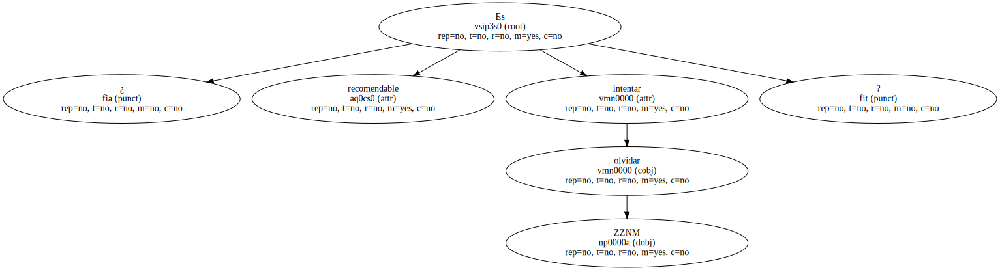Y , por supuesto , ¿ cuál es ese ZZNM que podría ser sano olvidar.
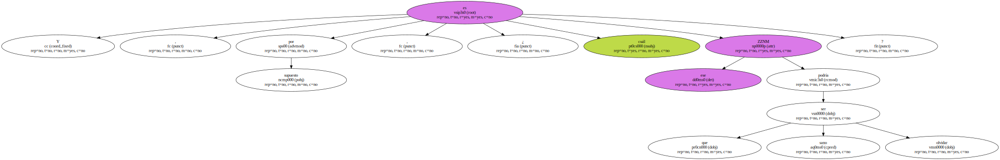Es evidente que ZZNM no es solamente un personaje de ficción literario , sino muchas más y más graves cosas : un mito nacional , un ideal irónico , la silueta de una concepción del mundo , el origen de un adjetivo descalificativo o encomiástico , el último héroe y el primer antihéroe.
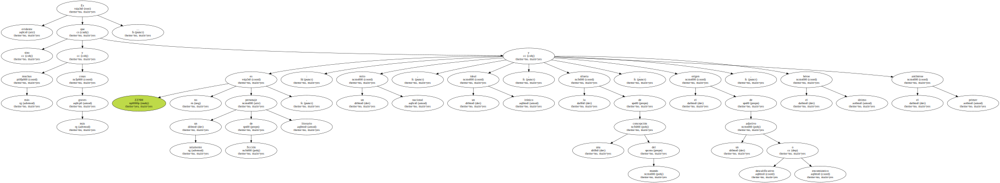ZZNM es más un prototipo que un tipo ; su figura melancólica y asténica está embadurnada con purpurinas , énfasis y aureolas que encuentran en la novela de ZZNM poco más que un discutible pretexto.
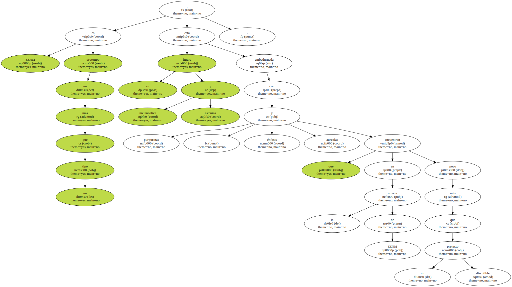Quizá el novelista de ZZCiudad sonó a su criatura - - al menos en un principio - - como una caricatura más jocosa que educativa ; pero lo cierto es que aumentó el mundo con otro complejo y ambiguo símbolo , con el retrato de un anhelo.

No es su culpa , sospecho que apenas es mérito suyo.
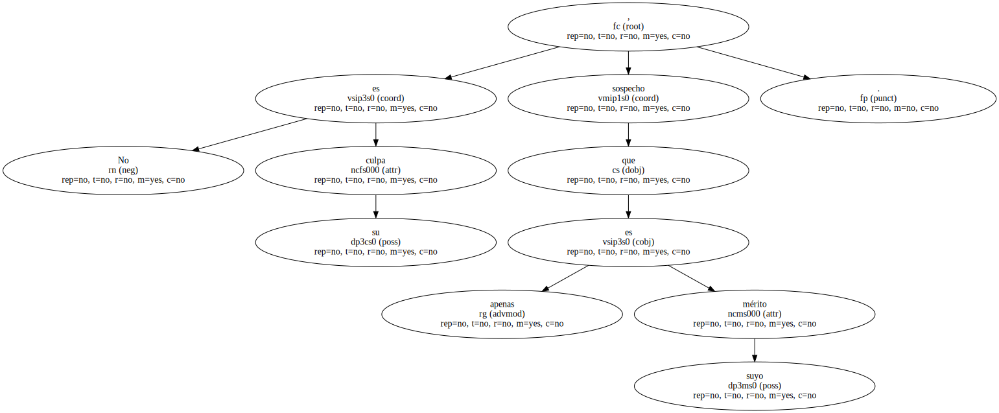Hay algo en ZZNM que pide ser transcendentalizado , algo que lo emparienta con el mundo religioso.
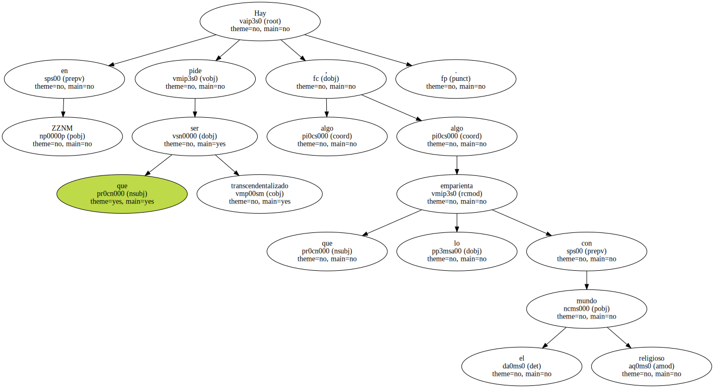¿ No es acaso toda religión la hipóstasis del conflicto entre la inercia de este mundo material y las supremas incitaciones de otro mundo.
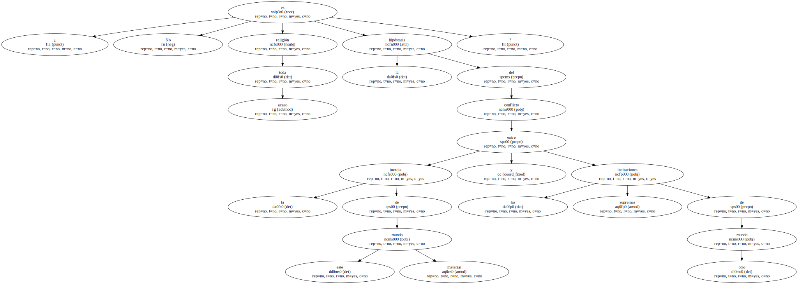¿ No es ZZNM el arquetipo de la fe ciega en los cánones establecidos por los textos sagrados ?.
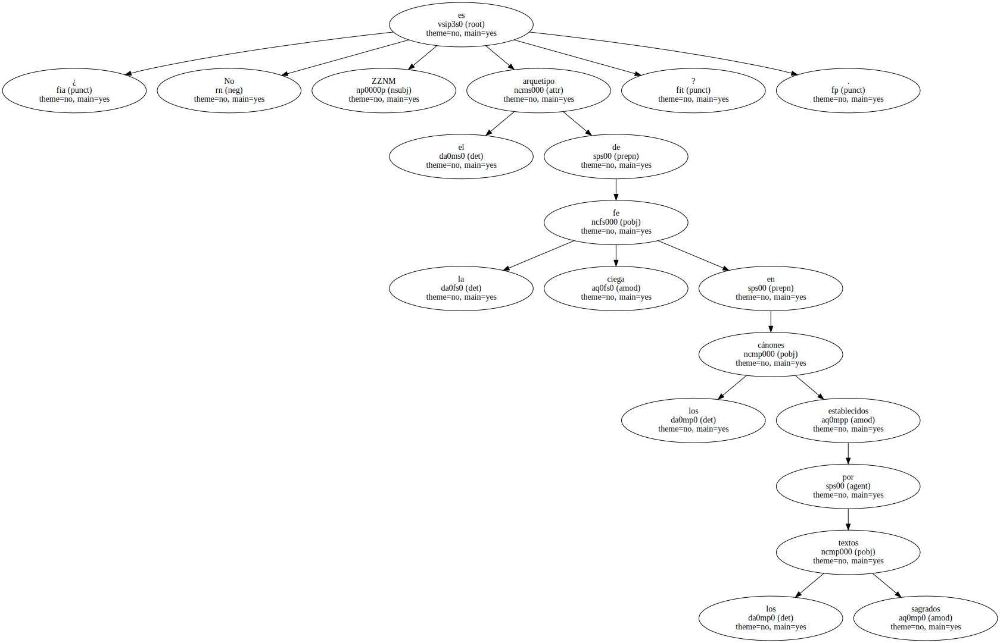¿ No se debate permanentemente - - como toda religión y toda demencia - - en el conflicto entre lo real y lo ficticio , lo percibido y lo proyectado , lo que constriñe y lo que exalta , los milagros y las bromas pesadas.
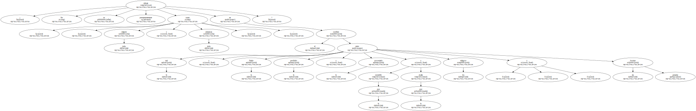Casi inevitablemente , ZZNM ha salido de la novela para subir a los altares y recibir el culto que merece Texto escrito para Radio ZZPaís , sobre una conferencia pronunciada en el ZZlugar de ZZciudad , bajo el patrocinio del ZZorganización.
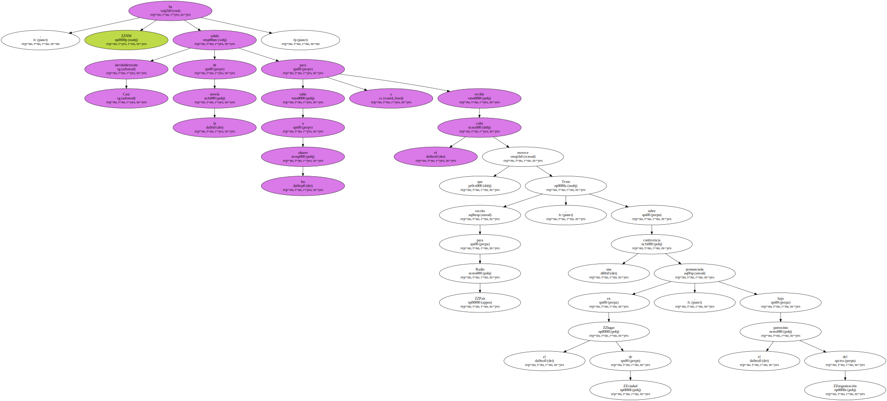Un santo desastroso , pero entusiasta.
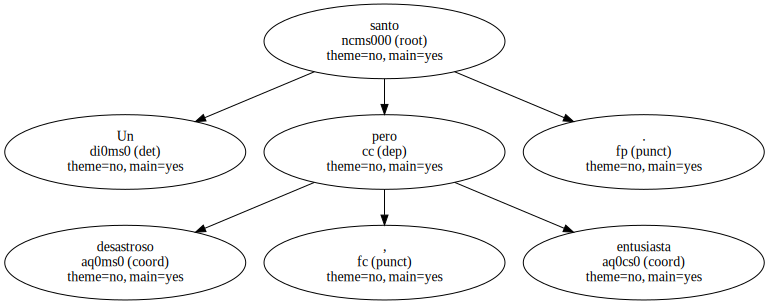Tal exaltación no se ha efectuado sin pérdida de ciertos matices importantes del personaje ni sin la invención por hagiógrafos tardíos de virtudes muy dudosas.
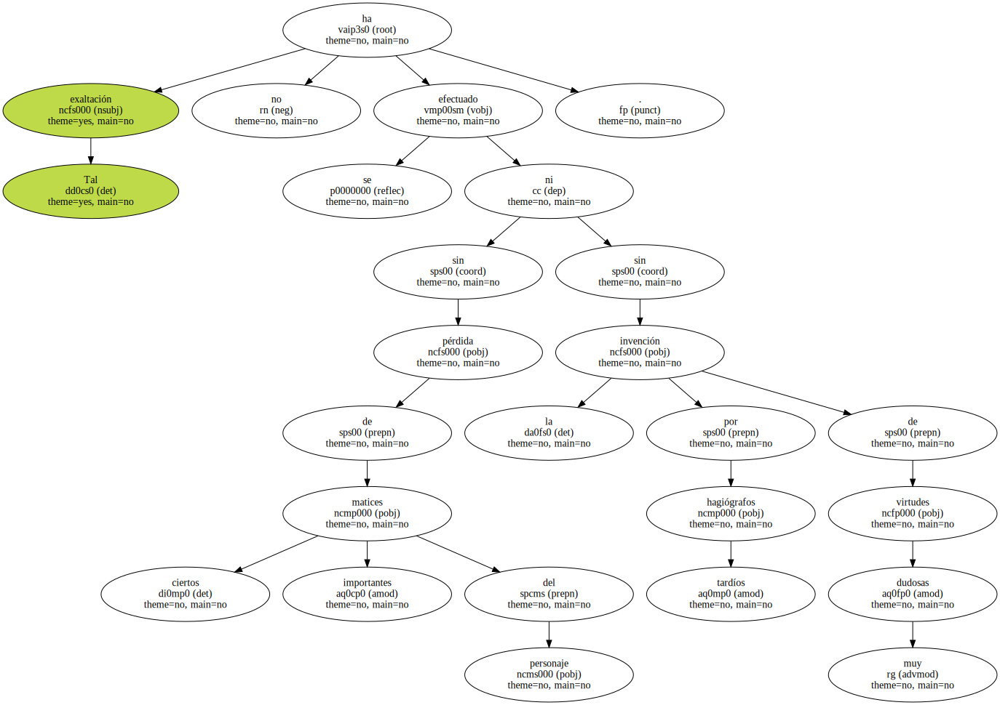